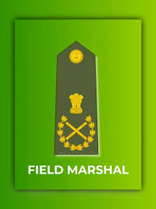
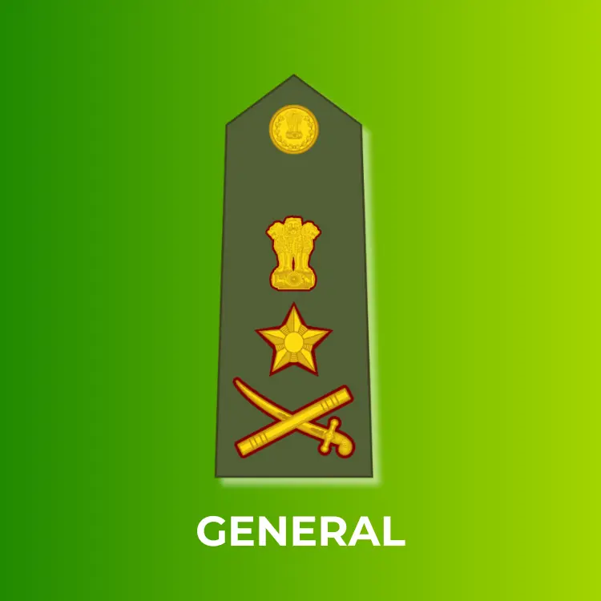
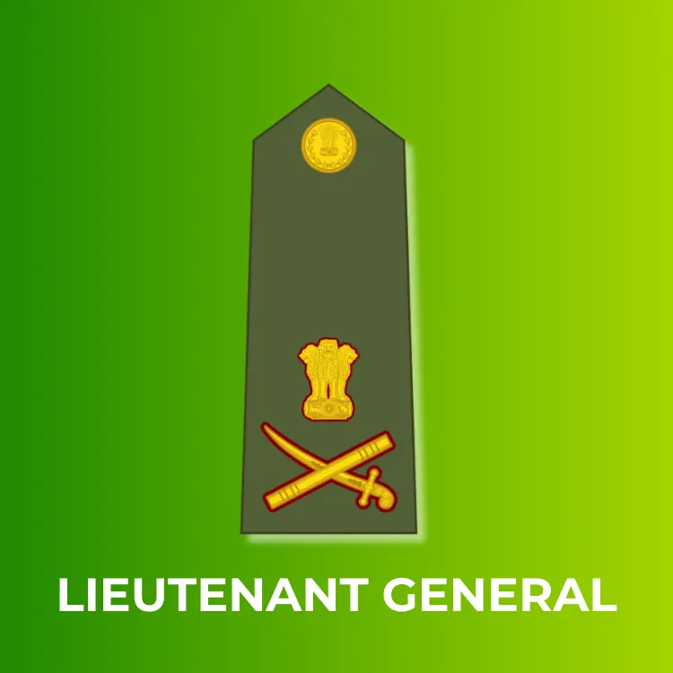
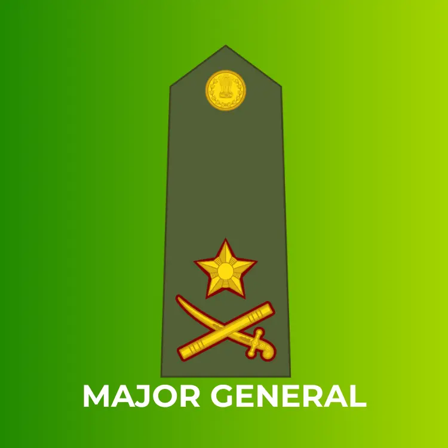
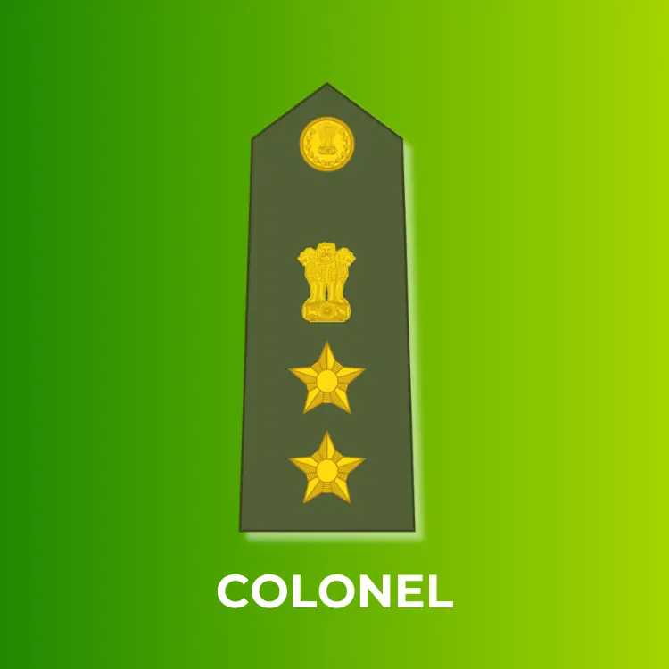
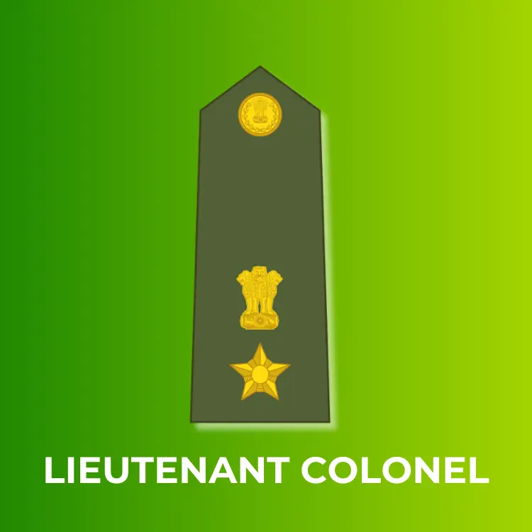
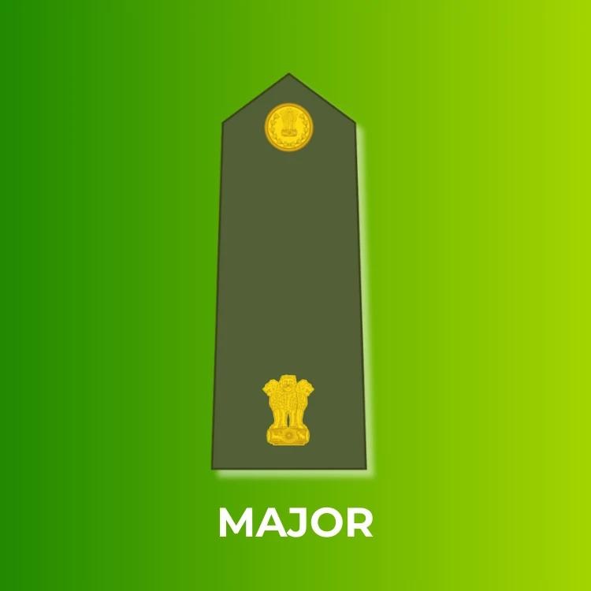
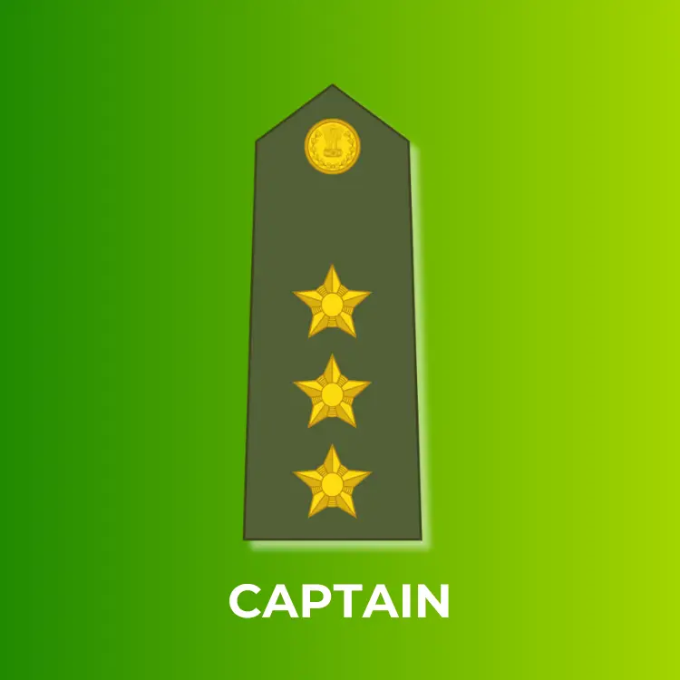

Field Marshals a five–star officer rank and the highest attainable rank in the Indian Army. The rank is
immediately above general, but not in use in the army's current structure. he first Field Marshal of the
Indian Army was Sam Hormusji Framji Jamshedji Manekshaw, famously known as"Sam Bahadur".

General is the highest active rank in the Army, a four-star position held by leaders like the
Chief of Army Staff (COAS) General Upendra Dwivedi or the Chief of Defence Staff (CDS) General Anil Chauhan.

Lieutenant General (Lt Gen)is a three-star rank, the second-highest active general officer rank.
They command large formations like corps or hold key strategic roles like Vice Chief of Army Staff, with
insignia featuring a crossed sword and baton with the Ashoka emblem above, and typically wear crimson collar
patches with three golden stars.

Major Generalis a two-star general officer rank in the Indian Army, ranking above a Brigadier and
below a Lieutenant General, holding significant command roles like commanding a division, with insignia of two
stars and crossed sword/baton.

Brigadieris a senior one-star rank, senior to a Colonel and junior to a Major General, typically
commanding a brigade (several thousand soldiers) or holding key staff roles at higher headquarters.
Colonel is a senior officer rank, with an equivalent rank of Group Captain in the Air Force and
Captain in the Navy. Colonels are responsible for planning and executing military operations, as well
as managing the administrative functions of their unit, including logistics, personnel, and finances.

Lieutenant Colonel (Lt Col)is a senior mid-level officer rank in the Indian Army, positioned
above a Major and below a Colonel, serving as a vital link between tactical and strategic command, often
commanding a battalion (600-800 soldiers) or holding key staff roles.

Majoris a field officer rank, positioned above Captain and below Lieutenant Colonel, serving as a key leader
for units or in staff roles. Leads smaller units, manages operations, and handles administrative duties.

Captainis a mid-level commissioned officer, senior to a Lieutenant but junior to a Major,
commanding a company and wearing three five-pointed stars as insignia.

Lieutenantis the entry-level rank for commissioned officers, a junior officer leading a platoon
(around 30-40 soldiers).